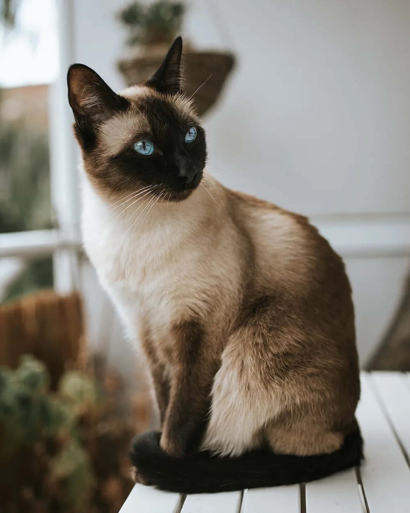
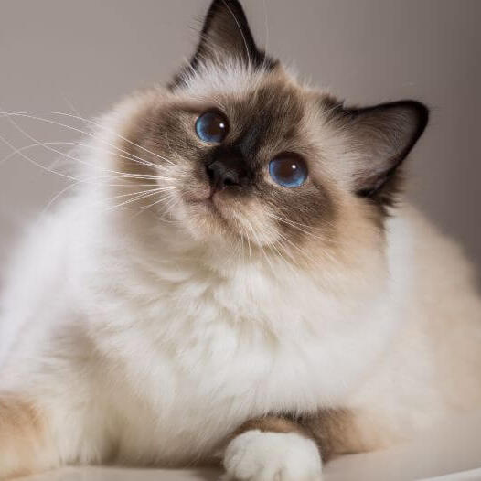

BREEDS
| SIAMESE | |
|  | Siamese cats are distinguished by their pointed coats, large eyes, large ears, long, thin, and tubular bodies. Because they stand out from other cat breeds in terms of appearance, some people could argue that Siamese cats are the most straightforward to identify. Males may be a little bit bigger than females, but overall, they aren't very enormous. They are lean, nimble, and balanced. |
| PERSIAN | |
 |
The Persian cat, whose history may be traced back to the deserts of Persia and Iran, has been revered for hundreds, if not thousands, of years. The Persian cat is currently the most widely-owned purebred cat breed in the United States. The Persian breed of cat ranges in size from medium to giant. A pansy-shaped, round, flat face and a thick, long coat are the distinguishing features of the Persian cat. Nearly every color and pattern imaginable is available for the coat, including solid hues, silver and golden hues, smoky and shaded hues, tabby patterns, particolors and bicolors, and pointed hues (Himalayan). |
| BIRMAN | |
|  | Another "color point" cat is the Birman, which has colored points on its face, ears, legs, and tail in addition to a body covered in a light cream to white coat. The Birman is a semi-long-haired cat with lovely blue eyes, pure white feet (gloves on the front paws, stockings on the back), and a silky soft, luxuriant coat. Under the fur, this cat is medium to large in size, with a well-muscled body, rounded face, and tidy ears. |
REFERENCES
Siamese Cat Breed Profile. (N.D.). Retrieved from litter.robot.blog. https://www.litter-robot.com/blog/siamese-cat/
Genetic Welfare Problems of Companion Animals. (N.D.) Retrieved from Universities Federation for Animal Welfare. https://www.ufaw.org.uk/cats/persian-dermatophytosis
Brown, Jackie. (2022). Persian Cat: Breed Profile, Characteristics & Care. retrieved from the SPRUCE PETS. https://www.thesprucepets.com/persian-cat-breed-5220970
Birman. (N.D.). Retrieved from Purina. https://www.purina.co.uk/find-a-pet/cat-breeds/birman